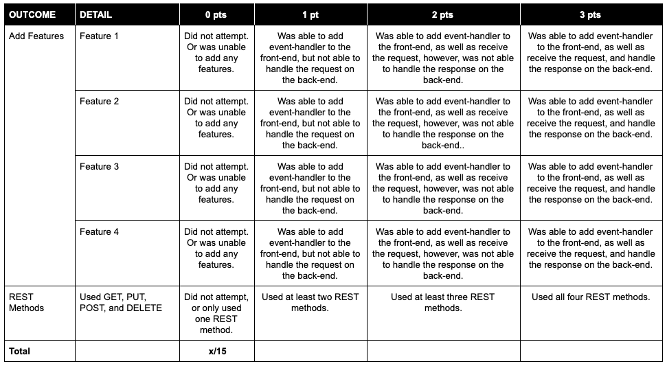

Module 4 Assessment
Introduction
It’s time to practice and solidify the skills you learned in this module.
Independent work
This is an individual assignment. Please do not collaborate with your peers or share your work until the project is reviewed as a class.
Setup
Click here to download the code files you need to for this project.
Navigate to the project folder on the command line and open it up in VSCode
In your terminal, be sure to run these commands separately: ‘npm init -y’ to create a package.json file, & ‘git init’ so that you can link your local repo to a Github repo (which you’ll need to create) for submission purposes.
In the terminal at the root of the project, run “npm i express cors” to install the necessary packages for the assessment.
Start the application’s server by running the following command in your terminal after you’ve navigated to the assessment’s root folder:
$ node server/index.js
Go to your web browser and click File > Open in the menu.
Navigate to the file client/index.html in the file explorer and open it (or, alternatively, you can open this file with the Live-Server extension, if installed).
You should see a button that says “Get compliment”.
Explore the app
Click the button a few times to get a feel for what this tiny web app does.
Read the code inside the two files client/index.html and server/index.js. Refer to your notes or the internet to understand how each part is working.
Add a New Feature
Using the “get compliment” feature and code as an example, create a new feature that allows the user to get a random fortune, similar to the kind you would see in a fortune cookie. There are some great ideas for fortunes here. You should include at least 5 possible fortunes.
This feature needs to include JavaScript code on the front-end to handle the button click event, as well as JavaScript (Node) code on the back end to handle the request for a fortune and producing an appropriate HTTP response.
Add 3 More Features
It’s time to get creative! Come up with 3 additional features you would like to add to this website.
They can involve more buttons , input (<input type="text">) fields, or dropdown fields (<select>).
Allow the user to ask for things that will inspire, encourage, or help them progress towards
their goals. The more creative, the better! You are not limited to only GET requests, you can also incorporate POST, PUT, DELETE requests if/where needed.
You should use your skills/reference materials from the lessons Back-End 1, Back-End 2 and the APIs lessons.
When done, be sure to push your code to Github for this assignment, then submit the link on Frodo!
To pass this assessment you must score at least 11/15.
